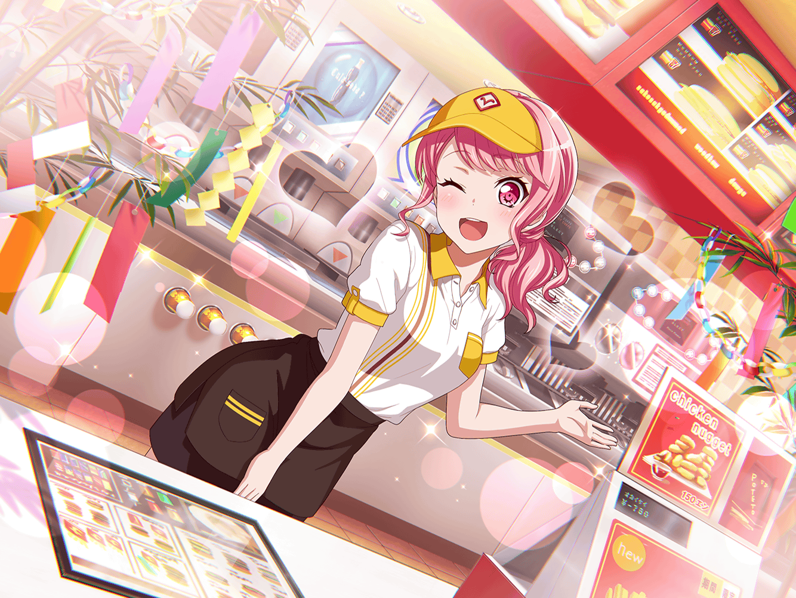

ファーストフード店
彩
んー……七夕祭りが終わっちゃったからか、
今日はお客さん少ないな～
彩
でも、だからと言って手を抜いていいわけじゃないよね。
もっと背筋をシャンとしてないと……
彩
……って、お客さんだ！
いらっしゃいませ～！
日菜
やっほー、彩ちゃん！
えへへ、来ちゃったー
紗夜
こんにちは、丸山さん
彩
ふたりとも一緒にご来店ありがとうございます！
今日はどうしたの？ お買いものでもしてたの？
日菜
うん、そうだよー。お母さんにたくさん買いものを
頼まれたから、おねーちゃんと一緒に商店街きたんだ～。
それで、その買いものが終わったから休憩しようと思って
日菜
彩ちゃん、早速注文していい？
彩
うん、どうぞ！
日菜
えっと、な・に・に、しようかな～。
おねーちゃんはどうする？
紗夜
そうね……
私はアイスコーヒーでいいわ
日菜
じゃあ、あたしはアイスティー！
彩
はい、ご注文承りました！ ……あ、そうだ！
この間の七夕キャンペーンでやってたポテトの大盛り、
好評だったから延長してるんだけど、ふたりとも食べてく？
日菜
ホントに！？ 食べる食べるー！
おねーちゃんも一緒に食べようよ！
いいでしょー？
紗夜
ひ、日菜がそこまで言うなら、仕方ないわね……
私も……ポテトをお願いするわ
彩
は～い、ご注文に追加しておきますね！
ポテトは揚げたてのものをお出ししますので、
少しお待ちくださ～い！
日菜
じゃあ、その間に
あたし、席取ってくるねー！
彩
ふふ、日菜ちゃんっていつも元気だよね。
今日もずっとあんな感じ？
紗夜
そうね、今日もずっと笑っていたわ。
きっとバンドの練習中もああなんでしょう？
ごめんなさい、騒がしい子で
彩
そんなことないよ。
日菜ちゃんの明るさに、
今まで、私、いっぱい助けてもらってきたもん
彩
ところで、その日菜ちゃんと、
紗夜ちゃんはよく一緒に出かけるの？
紗夜
うちは、あまり……
彩
そうなの？
姉妹でお出かけってけっこう楽しいよ！
私は好きだな～
彩
私も妹いてさ、一緒に買いものとか行くんだけど
友達とは違った楽しさがあるんだよね
彩
家族だからかな、変に気を遣わなくていいっていうか、
すっごく気が楽で
紗夜
妹さんと、仲いいのね
彩
うん！ あ、でも、ケンカすることもあるよ？
ほんとに、くだらないことでだけど
彩
私が買っておいたお菓子を勝手に妹が食べて、
この間もちょっと言い合いしちゃったし
彩
だけどね、そういうケンカができるのも
妹だからこそだと思うんだよね
紗夜
どうして？
彩
だって、友達相手だったら、
そんな小さいことで、いちいち怒れないじゃん
紗夜
なるほど。
妹さんが相手だからできるケンカってわけね
彩
うん！ 一緒にいていいところも
悪いところもあるけど、
やっぱり一緒にいると安心するよね
紗夜
ええ……たしかに
日菜
たっだいまー！
あれ？ ふたりともなんで笑い合ってるの？？
日菜
なになに、なんの話をしてたの？
あたしにも教えてー
紗夜
内緒よ
彩
うん、内緒だね
日菜
えー！
気になるから教えてよ～
紗夜
姉同士の秘密だから
紗夜
それより日菜、席は？
日菜
ちゃんと取ってあるってば。
秘密なんてずるいな～
彩
そうやって拗ねた妹をどうにかするのも
姉の役目なんだよね
日菜
拗ねてないってばー
彩
あ、ポテトが揚がったみたい。
ちょっと待っててね
日菜
…………
紗夜
まだ、拗ねてるの？
日菜
日菜
だって、あたしだけのけ者にするんだもん。
ずるいよ、おねーちゃん達だけー
紗夜
別にのけ者にしてるわけじゃないわよ
彩
は～い、お待たせしました！
ポテト大盛りと、アイスコーヒー、アイスティーです
紗夜
ありがとう。
ほら、日菜。
いつまでもふくれてないで行きましょう
日菜
あ、待ってよ、おねーちゃん！
じゃあね、彩ちゃん！
彩
うん、ゆっくりしていってね
日菜
お姉ちゃん、待って～！
彩ちゃんと何を話してたか教えて～！
彩
ふふ、本当に仲がいいな～